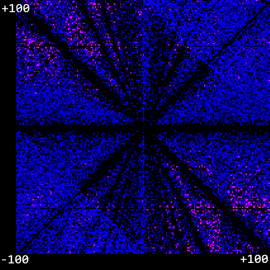
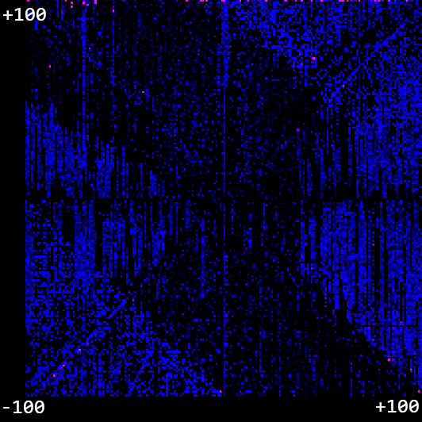
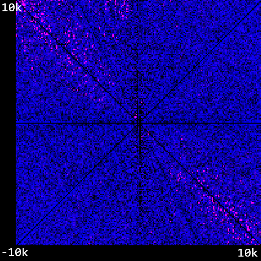
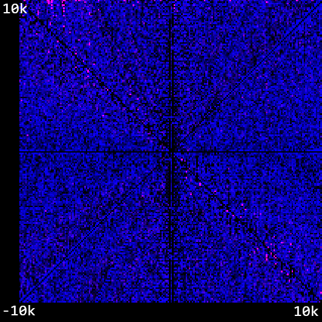
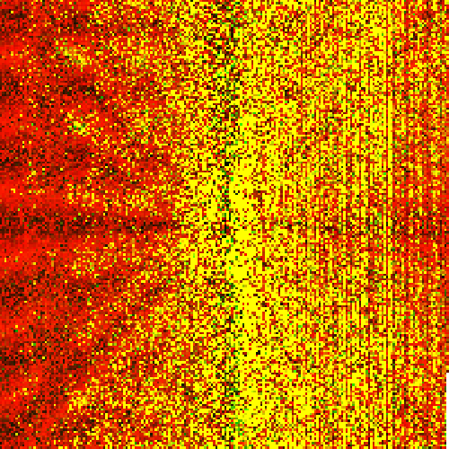

Semantic Neurons
An idea I've been having a lot of fun playing around with is this idea of little generative algorithms to build mapping functions. When we normally think about a neuron within a deep neural network, we think about this point within a hyperdimensional space. The dimensionality of this space is defined by the number of neurons in the next layer, and the position within that space is defined by the values of those weights and biases.
If we think about what this neuron is actually doing, it is forming a mapping between an input and an output. We store this mapping naively as a very large vector of weights. When we want to see what the weight is, we just look up its index within that big vector. But imagine if you were a young coding student, and you were given the task to write a function that maps some input to some expected output. For instance, mapping an input to it's square. Would you really implement your function like:
naiveSquare(val)
{
if(val == 1)
return 1;
if(val == 2)
return 4;
if(val == 3)
return 9;
// And so on for every input we expect...
}
If the output was truly random, then this sort of function might be the best we can hope for. But if the relationship between input and output contains some sort of structure, we might expect to be able to write a much more succinct function.
Consider taking the raw sourcecode of the C Clang compiler and representing it as a string. If I assign each index of this string its own dimension, I have effectively created a very high-dimension vector. If I understand the semantics of that vector well enough, I can understand how to transform any C program input into a machine code output.
In the same way, if we give a generational algorithm access to a rich-enough instruction set, and we just throw enough compute at it, we can reliably produce a tiny program that effectively maps one set to another when those sets contain structure.
Teeny Tiny Programs
A neuron is effectively a function that maps an input (activation) to an output (weight contributions for next layer). We can represent both with a single float[^1]. We therefore need to map this input variable to a range of values. We can do this in the previously described naive way, or we can implement a form of tensor that builds a logical function instead of a dictionary.
1st Experiment: Single-Value Generation
The first question we need to ask is this: how do we get a generative algorithm to write functions? We're going to try and come up with an architecture that can transform a single input to a single output via some form of generative program.
Problem statement: Given an input
nand a target outputm, train a program to outputmwhen givenn
Let's say that our neuron is defined by an array of 64 bytes, with a register of 4 integers. For now, let's lay out a very simple instruction set:
- NULL - The default character and represented by the byte
0- do nothing. - REG - Read the next 4 bytes as a 32-bit integer and write it into one of 4 registers
- COPY_IN - Copy an integer approximation of the original input to a register
- COPY_VAL - Copy an integer approximation of the current value to the register
- ADD - Add a number from the register to the input
- SUB - Subtract a number from the register with the input
- DIV - Divide a number from the register with the input
- MUL - Multiply a number from the register with the input
So, for instance, the program REG_1 32 ADD_1 COPY_VAL_2 MUL_2 will:
- Take a 32-bit floating point number as an input
v - Put the integer
32into the first register. - Add the first register to
v - Copy
vinto the second registry. - Multiply
vby the second registry (so in this case,v²) - Output the number.
Okay, that's a fair few tools for the generative code to use. Firstly, let's try a super naive generational random selection process where we run 1000 random mutations on the strongest program of the previous generation. We'll call it a win if we can get within 0.1 of the target value. So, how does it do for a task like input: 47 target: 1237?
Gen 1 output: 64 Error: 1173
Gen 2 output: 121 Error: 1116
Gen 3 output: 1401 Error: 164
Gen 4 output: 1289 Error: 52
Gen 5 output: 1286.0126 Error: 49.012573
Gen 6 output: 1279 Error: 42
Gen 7 output: 1278 Error: 41
Gen 8 output: 1277 Error: 40
Gen 9 output: 1262.6885 Error: 25.688477
Gen 10 output: 1240.0568 Error: 3.0567627
Gen 11 output: 1239.0901 Error: 2.090088
Gen 12 output: 1238.9432 Error: 1.9432373
Gen 13 output: 1237.9673 Error: 0.96728516
Gen 14 output: 1237.9672 Error: 0.9671631
Gen 15 output: 1236.9319 Error: 0.068115234
Success! 0.4s
Wow! That's cool. It's very fast to converge on the value, and it does it in an absolutely insane way! Let's check the program it spits out:
IN: 47 TARGET: 1237
REG_1 -16448256
REG_2 252579081
SUB_REG_1
ADD_REG_2
ADD_REG_2
SUB_REG_1
SUB_REG_1
REG_4 1286
ADD_REG_4
ADD_REG_2
ADD_REG_4
DIV_REG_1
ADD_REG_4
So that translates to:
((47 + 16448256 + 252579081 + 252579081 + 16448256 + 16448256 + 1286 + 252579081) / -16448256) + 1286
= 1236.93!!!!!
Amazing! And it found that solution in less than a second. Furthermore, it can pretty reliably find novel solutions. But as we push this further, we see the limitations. Many attempts - especially when given an especially tricky target that is a long way away - end up in a local minimum, with no mutation able to reduce the error further. Can it do this for any number to any other number in a decent amount of time? Let's plot an x/y graph between -100 and 100, and try to generate a program for each point that, when given input x, outputs y. We'll express how many generations it took us to get to a result in blue, and we'll express how big the error is when we get there in red. That means that the bright pink dots are where we failed to find a good solution.
 Hum! We see failure cases when the inputs and outputs are very far apart, which is kind of interesting as most of these functions end up using very large random numbers. Can we improve the generative process a bit? Okay, here's two ideas:
Optimisation: Generational Backtracking
A naive generational algorithm will always push forward with the current best generation, and not recognise local minimums. Instead, let's keep a history of each generation. Whenever the best member of a generation fails to spawn another better solution, we go back to the previous generation and try again. This can happen right back to the zeroed-out root if needs be. In this way, we avoid staying in local minimums which do not satisfy our accuracy requirement.
Optimisation: Probabilistic Mutation
A naive generational algorithm will randomly mutate a program with no rules. It will merely look at the total number of instruction sets, and use a random number generator to select from one of them. Instead, we keep track of how likely a certain instruction set is to decrease the error. Every time a generation improves upon a previous generation, we take a look at the instruction set within it and increment a counter for each instruction. In this way, we can build up an idea of the instructions which are likely to lead to an improvement and generate with this weighting.
With these improvements, things are looking a lot better for the -100 to 100 domain!
 How about when we extend it out to -10,000 - 10,000? Here it is with a totally random instruction mutation and only generational backtracking:
 And now with weighted instruction mutations - a significant improvement, which validates our intuition that this is a valuable contribution in this case.

 But dog only knows why these weights were so strongly preferenced! Subtracting the value from register 4 was by far the most popular instruction, and yet putting a value into that register was only a fraction of that. Who knows! Not me.
But dog only knows why these weights were so strongly preferenced! Subtracting the value from register 4 was by far the most popular instruction, and yet putting a value into that register was only a fraction of that. Who knows! Not me.
2nd Experiment: Training for Multiple Values
Of course, this method is only valuable if you can embed > n mappings within a program that is 4n bytes long i.e. better than an array of float mappings. The interesting thing here is that we would expect this to be true when there is structure within the input training data that can be exploited, and false when there is no structure. If we were to write a really good generative algorithm which we were confident could explore the full function possibility space, the ultimate size of any solution may indicate an interesting property of the input set. It also means that we should always try to produce the smallest possible program, as that is the program that is most likely to capture some form of abstraction about the training data.
My initial thought with embedding 2 values within the same program was that it would require me to implement some form of branching within the instruction set - if, else, that sort of thing. That's fine - with 4 registers we've got plenty of room for different instructions. I found myself building the scaffolding to train for n pairings of target to desired values before I built that training set, and… wow, with a nicely structured set, it kinda just works!
For example, let's try and train a function that, when given x, will produce x². We'll give it 40 bits of training data - pairings of x with f(x) from (-20, 20]. In 2 generations, we are able to generate such a program:
> program.Calculate(4)
ADD_REG_1 // No effect... +0
ADD_REG_2 // No effect... +0
REG_4 1079643063 // Put the number in the 4th register
COPY_VAL_REG_3 // These 2 steps
MUL_REG_3 // are the magic
REG_2 1521852915 // No effect...
DIV_REG_4 // These 2 cancel each
MUL_REG_4 // other out! Interesting inefficiency...
COPY_VAL_REG_3 // No effect
Okay, how about something a little harder? Can it figure out y = 4x² + 8x + 16? Well, it turned out to do something like this, I needed a further optimization. Previously, I mutated some fixed amount of positions in the array each generation. So in a 64-byte program I might always mutate 10 bits. However, this actually really restrains our starting position in gradient descent process. We pretty much just want to throw our hook as randomly around the possibility space as possible, and then start feeling the current.
We define the error bound as the sum of all absolute differences of the intitial training set. So if our training set is [1, 5] [4, 7] [2, 9], then the error bound will be (5-1) + (7-4) + (9-2) = 14 . For this run, I defined a good result as one that approximated to < 1% of the error bound.
 Amazing stuff! We can see that the function we've evolved fits the target line pretty well. But does it do well for the general set of functions like before? For instance, we can do something like
Amazing stuff! We can see that the function we've evolved fits the target line pretty well. But does it do well for the general set of functions like before? For instance, we can do something like y = ix² + jx + cwhere we iterate i and j from -100 to 100, and for the sake of simplicity we'll just randomly select a value for c between [-100, 100]. This failed a lot at first, with the majority of points hitting the 100-generation limit with no good solution - more improvements are needed!
Optimisation: Use Previous Good Solutions as a Baseline
One optimisation I thought might be useful is sharing good programs from previous iterations with the current iteration. Every time the trainer submits a good solution, it will add it to it's history. When it rolls back a generation (see: Generational Backtracking) it will try and mutate a previous good solution while it has previous solutions it hasn't tried. Right now, it will only keep the best 10 solutions for mutation as this cuts into our generations. This works great for reducing our error, but importantly will only apply when we know that the data we're fitting all follows some roughly similar pattern.
Even so, this took a long time - the CPU version took almost 31 hours to fill out the full set! And even after that, we had a lot of failure cases. However, I'm pretty sure all of these failure cases would have eventually folded to computation and in general I think the premise holds promise. I slightly changed the colouring on this one so you could see the detail a bit more - the red channel is our error, the green channel is our generations, so yellow pixels are our failure cases:

In general, I think this is a promising route. Can we create an array of these objects and train them to cooperate? Let's find out next time!
GPU vs. CPU
I implemented this algorithm both on the CPU (C# code) and the GPU (CUDA). Both definitely had their advantages and disadvantages:
- CUDA doesn't have a
bytetype so I had to expand everything out toint, which does simplify the code somewhat but makes the programs (and especially the instructions) consume a lot of unnecessary memory.- A possible solution to this would be using all 4 bytes constructively, e.g. using the 1st byte for the instruction and the next 3 for instruction parameters. This would complicate the program parsing though.
- The CUDA code is currently implemented 1:1 with the CPU code, which is an issue because both mutating and calculating a program requires a lot of branching. It's costly when different waves take different routes on the GPU.
- It would be possible to completely serialize (i.e. remove branching) the program calculating code. We're actually in an ok spot for this, because our branching happens right at the very end when we process the instruction set.
- I'm a little less unsure how to serialize the mutation code. Randomness on the GPU is tricky, because you're trying to do everything the same, and yet produce a wide range of mutations that effectively explore the possibility space.
- My CPU is a lot more powerful than my GPU as I'm on a laptop, so with that hardware setup I didn't actually see a huge improvement in performance.
Get The Source
You can find all my source code here: https://github.com/cowtrix/SemanticNeurons
[^1]: It is inaccurate to represent a neuron's output by a single float value, especially if we want the activation of a neuron to activate a range of neurons within lower layers. However, the structure of the function here is fairly arbitrary. We define the ground rules, the input, the output, and the transformations. All that matters is that we give a big enough possibility space and enough compute to the generational algorithm for it to find a good solution.